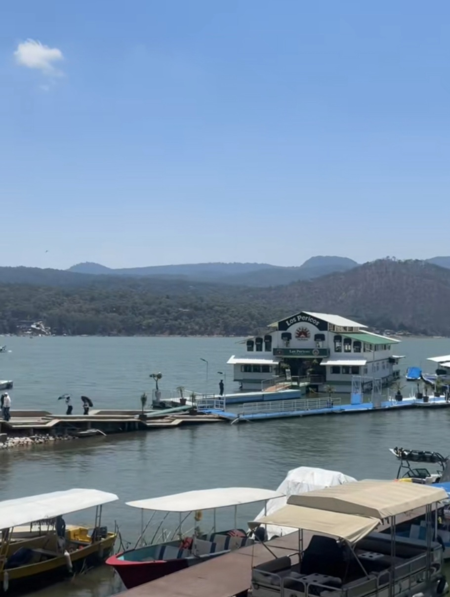
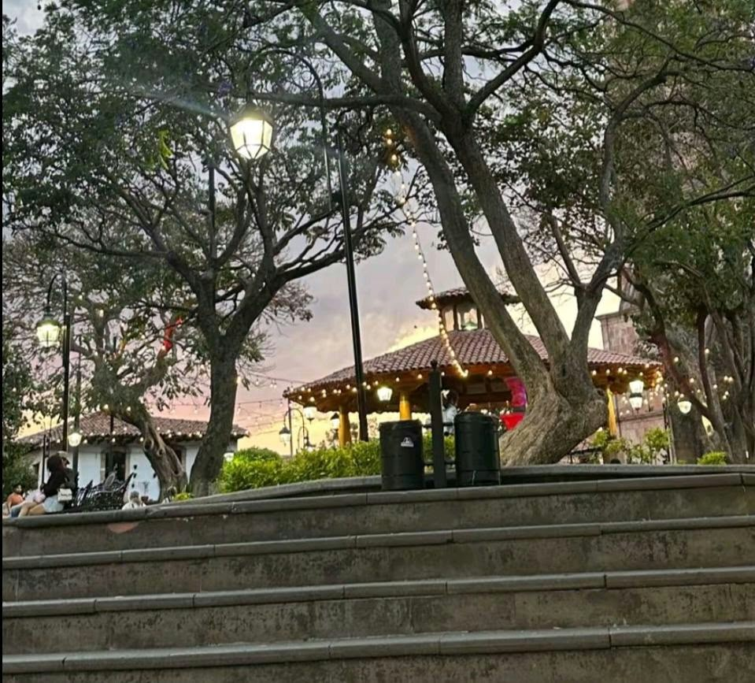
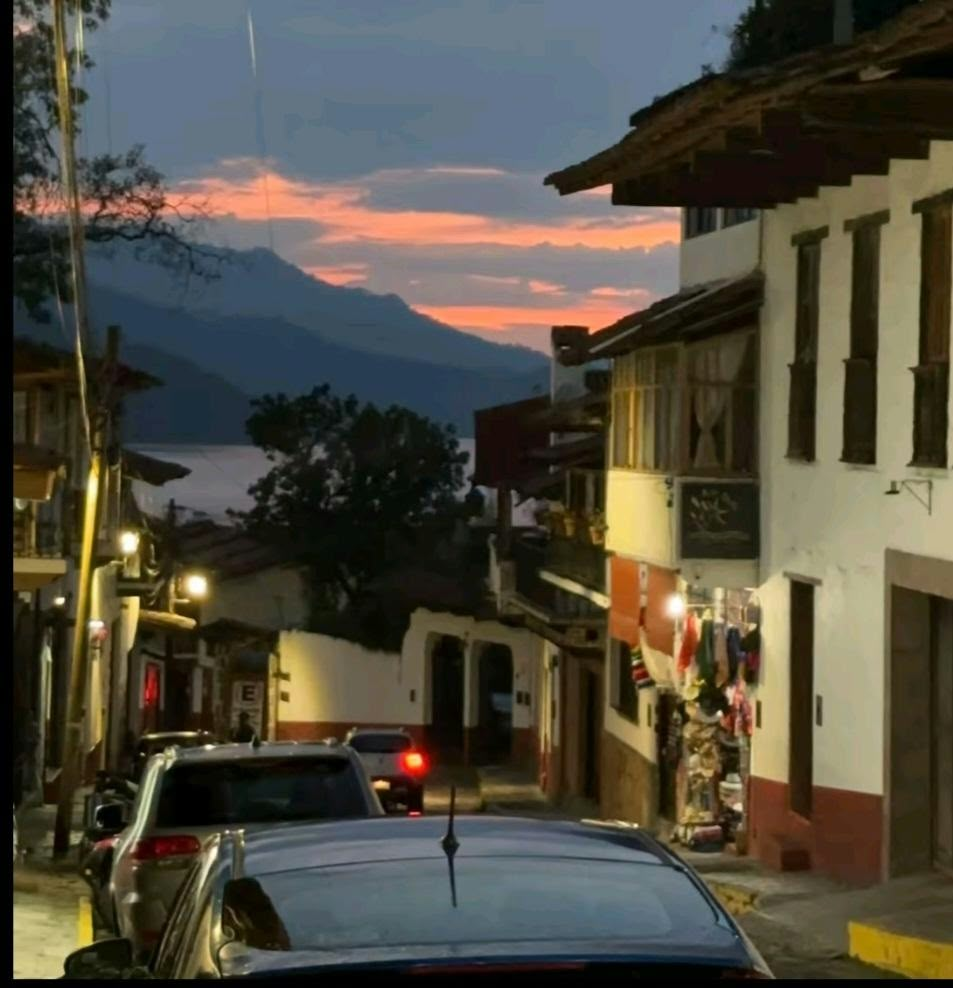
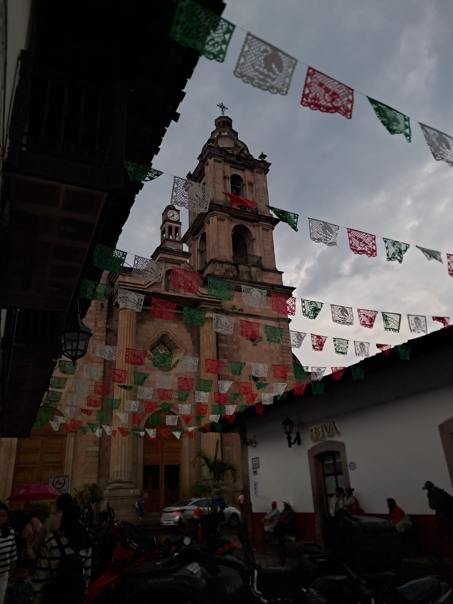
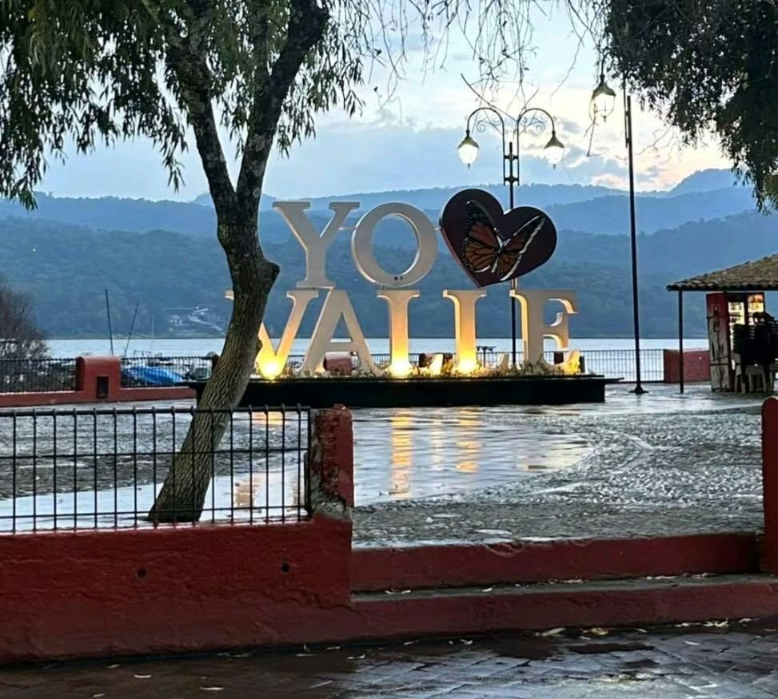
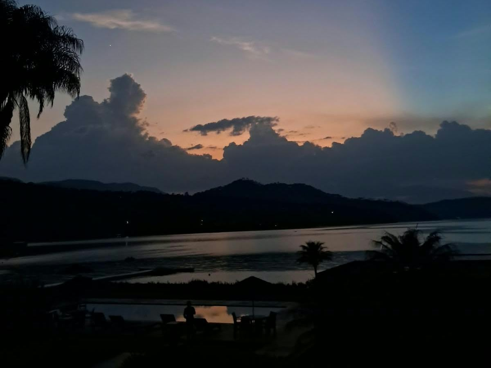

Este lugar se encuentra dentro de la presa municipal Miguel Aleman en Valle de Bravo
Desde aquí salen los paseos en lancha por la presa. También hay restaurantes flotantes y renta de embarcaciones para deportes acuáticos como vela y kayak
Valle de Bravo es muy conocido por el vuelo en parapente y por la vela, y la presa es el centro de esas actividades.

Ubicada en la parte central del municipio
Esta es una plaza donde los habitantes de valle de bravo se reunen en las tardes, se sientan a platicar o bien a ver el bonito ambiente que se logra percibir , tambien algo que lo hace especial son que esta rodeado de naturaleza
Es un punto de reunión para paseos, artesanías y eventos, sobre todo los fines de semana y en fiestas.

La calle sigue un estilo rustico, con las fachadas de casas iguales que le da un estilo especial
Se ven fachadas blancas con detalles de madera, balcones y techos de teja. Las calles empedradas con tiendas de artesanías y textiles dan al pueblo su aspecto colonial.

Ubicada a un costado del jardin municipal
es el principal símbolo religioso y arquitectónico de Valle de Bravo.
San Francisco de Asís, cuya fiesta se celebra el 4 de octubre. En esa fecha suele haber celebraciones en el pueblo

Se encuentra dentro de el muelle de Valle de Bravo a unos cuantos metros del cine municipal
Es el letrero iluminado del muelle, con un corazón que lleva una mariposa monarca, símbolo de la región. Al fondo se ve la presa y las montañas.
Es uno de los puntos favoritos para tomarse fotos.

Ubicada en dentro de la presa Miguel Aleman
Muestra la presa Miguel Alemán con nubes y tonos naranjas en el cielo, y siluetas de montañas y palmeras.
Los atardeceres sobre el lago son de lo más popular en Valle de Bravo. Muchos hoteles y restaurantes tienen terrazas con vista al agua.